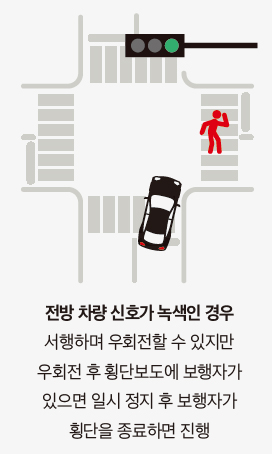

알아두면 반드시 도움 되는 도로 상식
손해사정사가 직접 알려주는
2023년 달라지는 도로교통법
도로교통법시행령과 시행규칙이 개정됐습니다.
이번 호에서는 2023년 도로교통법이 어떻게 달라지는지 알아보겠습니다.
음주운전 금지규정을 2회 이상 위반한 운전자에 대한 형사처벌을 가중하는 도로교통법 제148조의2 제1항에 대한 위헌소원 등(2021.11.25.종국결정. [2021. 11. 25. 2019헌바446, 2020헌가17, 2021헌바77(병합)])에서 동 조항에 대한 위헌결정이 나와 동 조항이 개정되었습니다. 이전에는 술에 취한 상태에서 자동차 등을 운전하거나 정당한 사유 없이 경찰공무원의 음주 측정 요구에 응하지 않는 행위를 2회 이상 반복하였을 때 혈중알코올농도나 시간적인 간격을 묻지 않고 일괄적으로 2년 이상 5년 이하의 징역이나 1천만 원 이상 2천만 원 이하의 벌금에 처하게 되어 있었습니다. 하지만, 이 조항은 10년 이상 전에 위반한 행위에 대해서는 현재 음주운전 금지규정을 반복적으로 위협하는 행위라고 평가하기 어렵고, 아울러 혈중알코올농도가 낮은 경우에도 일괄적으로 동일하게 처벌하는 조항을 두는 것은 책임과 형벌 간의 비례원칙에 위반된다는 등의 이유로 위헌결정이 되었습니다.
개정된 법 조항에서는 앞의 음주운전 금지규정을 위반하여 벌금 이상의 형을 선고받고 그 형이 확정된 날부터 10년 이내에 다시 같은 위반을 했을 때 혈중알코올농도에 따라 달리 처벌됩니다. 우선 경찰공무원의 음주 측정 요구에 불응하면 1년 이상 6년 이하의 징역이나 5백만 원 이상 3천만 원 이하의 벌금에 처하고, 음주운전의 경우 혈중알코올농도가 0.2퍼센트 이상이면 2년 이상 6년 이하의 징역이나 1천만 원 이상 3천만 원 이하의 벌금에 처하며, 0.03퍼센트 이상 0.2퍼센트 미만이면 1년 이상 5년 이하의 징역이나 5백만 원 이상 2천만 원 이하의 벌금에 처합니다(시행일: 2023. 4. 4.).
가.
자전거 등 및 손수레 운전자의 인적 사항 제공 의무 위반
기존에는 주·정차된 차만 손괴한 것이 분명한 경우에 인적 사항(성명·전화번호·주소 등)을 제공하지 아니한 경우에(일명 ‘물피 도주’) 승합자동차, 승용자동차, 이륜자동차 등에 대해서만 각각 13만 원, 12만 원, 8만 원의 범칙금이 부과되었습니다. 이에 더하여 개정된 법에서는 자전거 등(자전거와 개인형 이동장치) 및 손수레 등(손수레, 경운기 및 우마차)에 대해서도 주·정차된 차를 손괴한 후 인적 사항을 제공하지 아니하면 6만 원의 범칙금이 부과됩니다.
나.
차로 통행 준수 의무 위반
기존에는 도로교통법 제14조 제2항·제3항·제5항을 위반하여 지정차로 통행을 위반하거나 차로 너비보다 넓은 차 통행 금지를 위반했을 경우에 범칙금을 부과했었는데(승합자동차 등: 3만 원, 승용자동차 등: 3만 원, 이륜자동차 등: 2만 원, 자전거 등 및 손수레 등: 1만 원), 이에 더하여 차로 통행 준수 의무 위반의 경우에도 같은 범칙금이 부과됩니다.
운전을 하다 보면, 한 차선을 물고 주행하는 차량을 종종 볼 수 있는데, 개정된 법에서는 이러한 차량에 대해서도 범칙금과 10점의 벌점(도로교통법 시행규칙 [별표 28] <개정 2022. 10. 20.>)이 부과됩니다.
가.
이륜자동차의 중앙선 침범 및 회전교차로 통행 방법 위반
도로교통법 제13조 제3항을 위반하여 중앙선을 침범하거나 법 제25조의2 제1항을 위반하여 회전교차로에서 반시계 방향으로 통행하지 않은 차에 대해서 고용주 등에게 승합자동차 등은 10만 원, 승용자동차 등은 9만 원의 과태료가 부과되었었는데, 개정된 법에서는 이에 더하여 이륜자동차 등(이륜자동차 및 원동기장치자전거)의 고용주 등에게도 7만 원의 과태료와 운전자에게는 30점의 벌점(도로교통법 시행규칙 [별표 28] <개정 2022. 10. 20.>)이 부과됩니다.
나.
고속도로에서의 앞지르기 통행 방법 준수 위반
고속도로에서 다른 차를 앞지르려면 방향지시기, 등화 또는 경음기를 사용하여 행정안전부령으로 정하는 차로로 안전하게 통행하여야 하는데(도로교통법 제60조 제2항), 이를 위반하였을 경우에 범칙금이 부과(승합자동차 등: 7만 원, 승용자동차 등: 6만 원)되는 것 이외에 해당 차의 고용주 등(운전자 및 관리자, 사용자 포함)에게도 과태료를 부과하도록 개정되었습니다(승합자동차 등: 8만 원, 승용자동차 등: 7만 원).
고속도로에서 운전하다 보면 1차로로 계속 주행하는 차량을 발견할 수 있는데, 1차로는 도로교통법상 앞지르기 차로에 해당합니다. 따라서 1차로로 계속 주행할 경우, 앞지르기 통행 방법 준수 위반으로 앞에서 살펴본 범칙금 또는 과태료 부과 대상이 될 수 있습니다.
다만, 차량 통행량 증가 등 도로 상황으로 인하여 부득이하게 시속 80킬로미터 미만으로 통행할 수밖에 없는 경우에는 앞지르기하는 경우가 아니라도 통행할 수 있습니다(도로교통법 시행규칙 [별표 9] <개정 2022. 10. 20.>)
교차로에서의 우회전에 대해서는 이에 대한 해석과 관련하여 그동안 말도 많고 탈도 많았었는데, 이를 명확히 하였습니다. 우선 보행자 보호에 관하여 모든 차 또는 노면전차의 운전자는 보행자가 횡단보도를 통행하고 있거나 통행하려고 하는 때에는 보행자의 횡단을 방해하거나 위험을 주지 아니하도록 그 횡단보도 앞에서 일시 정지하여야 합니다(도로교통법 제27조 제1항). 따라서 차의 운전자는 횡단보도를 통행하는 사람이 있으면 신호에 상관없이 무조건 일시 정지하여야 합니다.
그런데 문제는 비록 횡단보도의 보행자 신호이기는 하지만 보행자가 없을 때 우회전을 할 수 있는지 여부였습니다. 이와 관련하여 경찰청 보도자료(2022. 1. 17.)를 인용하면, 보행자 사고가 빈번한 장소에는 우회전 신호등을 도입, 설치하도록 하여 운전자는 이에 따르면 되고, 이러한 신호가 없을 경우에는 전방 차량 신호가 적색 신호면 일단 반드시 일시 정지한 후 신호에 따라 진행하는 다른 차마의 교통을 방해하지 않고 서행하여 우회전하면 되는데, 보행신호가 녹색 신호인 경우에는 보행자가 통행하고 있을 때는 정지해야 하며, 보행자의 통행이 끝난 후에는 보행신호가 녹색이더라도 우회전할 수 있습니다. 그리고 전방 차량 신호가 녹색 신호일 때 서행하며 우회전할 수 있지만, 우회전 후 만나는 횡단보도에 보행자가 있으면 일시 정지한 후 보행자의 횡단이 종료되면 진행하면 됩니다(도로교통법 시행규칙 [별표 2]). 이는 2023년 1월 22일부터 시행하였습니다.

전문가가 직접 답변해 드립니다. 채택된 질문을 주신 독자 여러분께는 소정의 상품을 지급합니다.